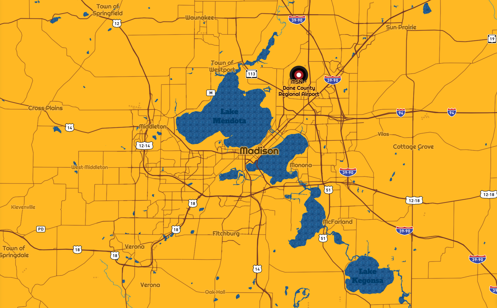
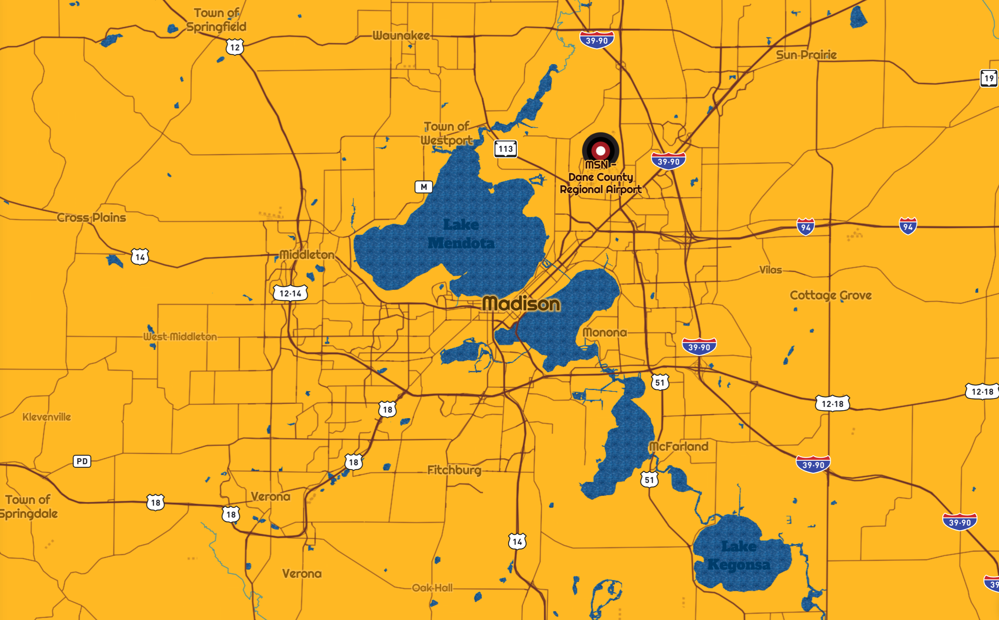
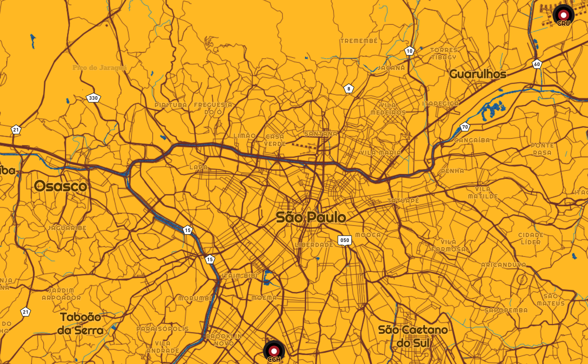
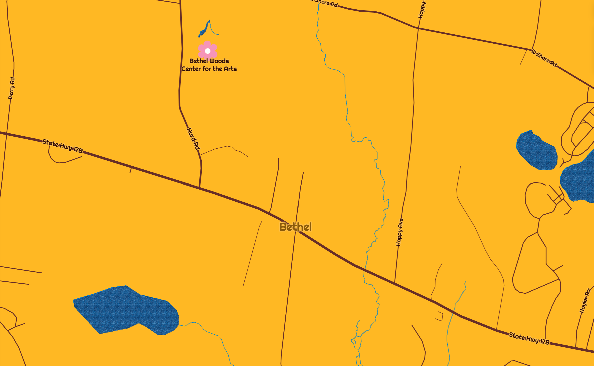
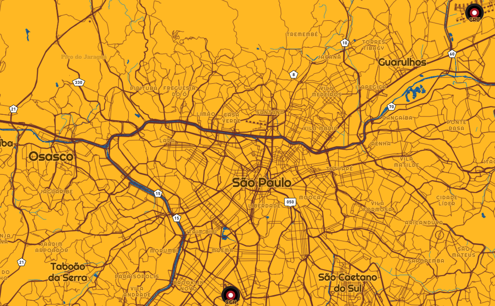
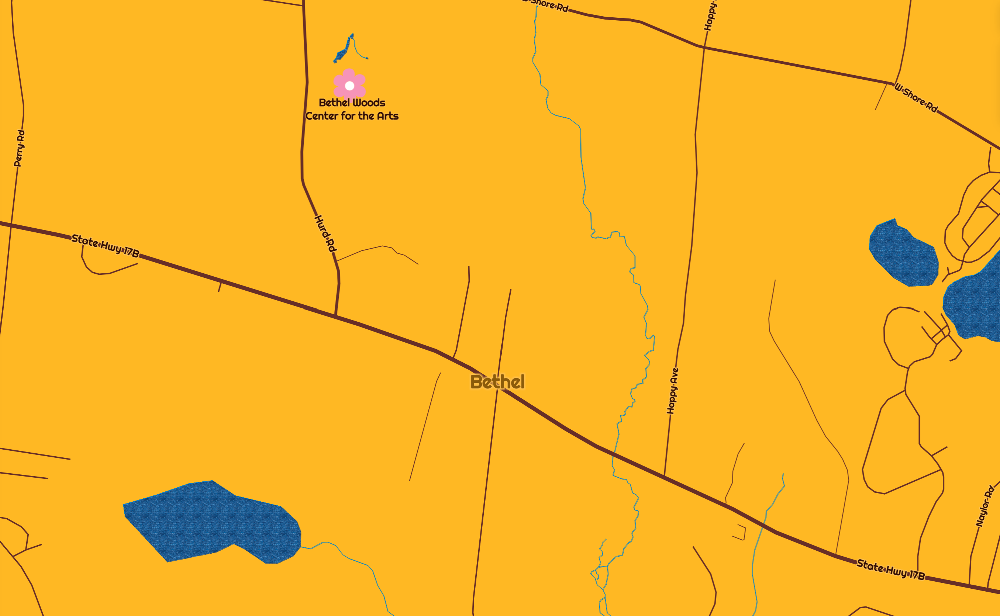

That 70's Map
Lauren Wunderlich
Made for Geography 572, my map style is called Groovy 70's and it is based on That 70's Show and the larger 1970's era.The 1970's period has a unique aesthetic, and is one with the cultural appeal to have a whole show dedicated to capturing it. So, why not use a map to capture it as well!

My main inspiration photo for capturing That 70's Show is the above TV show poster, as well as a fashion photo from the era and two moodboards.


 

Let's venture to 'Point Place', Wisconsin (rumored to be based on Sheboygan, Wisconsin). The map uses color alongside flower and record icons to envoke the 70's feel. The flowers represent points of interest and the records are transit icons.
The map displays a different amount of detail depending on zoom. When zoomed in to Sheboygan, buildings appear in the iconic orange color of the TV poster.
Around the world, water is made to look like the texture of denim as a nod to the bell bottom jeans of the era.
Seen at a regional zoom, labels use two 70's inspired fonts. Roads also have thick linework which is consistant with 70's art style.
A look around the world:

 



San Francisco, California
London, United Kingdom
Sao Paulo, Brazil
Bethel, New York
Explore the full map here.
Credits:
Map created with Mapbox Studio
Data from openstreetmap
Flower Icon created with use of SVG noun project icon by Titik Kornia Sari
UW Cartography Lab